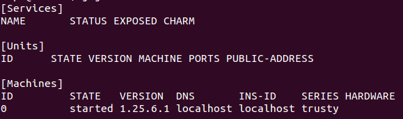
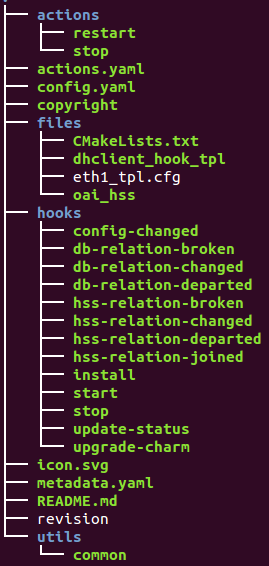

云端服务管理工具：Juju
2016-11-10 by subondJuju介绍
Juju的运作方式
Juju本地环境配置
Juju服务编排
Juju Charm的使用
- /hooks
- /actions
- actions.yaml
- config.yaml
- icon.svg
- README
charm之间的关联性
Charm文件详解
- metadata.yaml
常用功能
Juju是Canonical公司提供的服务编排工具。它是Ubuntu云套件的一部分，与Ubuntu服务器、OpenStack、用于裸机配置的MAAS 、以及用于系统管理和监控的Landscape一起组成Ubuntu云套件。同时，Juju也是 开源的，向用户提供一种面向服务的架构(service oriented architecture)和面向应用的部署(application oriented deployments)的通用模型。Juju可以对云端的服务进行快速可靠的部署，包括拓展云端业务，因此管理员可以很容易地部署Wordpress博客系统，MongoDB大系统管理系统、Mysql数据系统等。目前Juju具有1.25(稳定版)和2.0(升级版)，用户可以自行选择。关于Juju的安装比较简单， 可以参考官网教程
Juju为用户提供了命令行和图形化界面两种方式来进行业务部署，其图形化界面称为"juju-gui"(可利用juju部署到本地系统,juju deploy juju-gui)。
Juju进行运作要具备以下三个因素：
1) Juju Client
Juju Client端在不同的平台都有(Ubuntu/OXS/Windows)，以Ubuntu为例，Juju Client套件名为juju-core。
2) Ubuntu Image环境(也成为Ubuntu Server,可根据需求设定)
一般的公有云都可以提供这样的环境，例如OpenStack,Amazon EC2,Microsoft Azure。当然，也可以搭配Ubuntu MAAS环境进行搭建。
3) SSH key pair
SSH key pair是用来控制Ubuntu Server，可利用一对SSH key pair登入至Ubuntu Server环境，并进行Service Orchestration操作。
Juju是为云端服务提供管理工具，但是作为初学者我们更多是使用自己的本地环境来学习Juju的相关操作和Charm的编写。下面介绍如何搭建自己的Juju本地环境，以kvm虚拟机为例。
安装Juju
sudo apt-add-repository ppa:juju/stable
sudo apt-get update && sudo apt-get -y install juju-core
安装本地支持文件以及KVM/libvrt软件
sudo apt-get install juju-local qemu-kvm libvirt-bin bridge-utils virt-manager qemu-system uvtool-libvirt uvtool
生成配置文件：其路径为:
~/.juju/environment.yamljuju generate-config
juju switch kvm
修改配置：在environment.yaml中找到local，进行如下修改：
local:
type: local
kvm:
type: local
container: kvm
执行，
juju bootstrap即可生成本地环境。可使用
juju status --format tabular查看状态信息。如下图所示。 
*关于Juju环境的其他操作
# 查看环境列表 juju env --list juju env // 可查看当前环境名称 # 销毁环境 juju destory-environment [env_name] # 设定environment中的VM版本 juju set-env "default-series=trusty"
设定bootstrap环境juju bootstrap用来生成可运行charm的juju环境，可利用-e指定环境名称，例如：
juju bootstrap -e my_env接下来，简单说明juju client/juju bootstrap node/cloud provider三者之间的关系。
1) juju client通过
bootstrap指令，在cloud provider上产生一个可用来部署juju charms的bootstrap实例，即juju环境。2) juju client通过
juju deploy指令，在bootstrap实例上安装指定的charms到cloud provider的VM中。3) cloud provider中，既有bootstrap实例，也有charms的实例。
因此，三者的交互过程具有如下关系：
juju client < ---- > juju bootstrap instance < ---- > cloud provider
Juju利用部署服务(Deploy Services)的方式进行服务编排(Service Orchestration)。接下来，说明如何利用juju进行服务部署工作。
1) 利用charm Store进行部署
# 利用charm store部署服务，以mysql为例 juju deploy mysql # 指定serveice版本,格式为: / juju deploy cs:precise/mysql
2) 利用本地charm(Local Charm Repository)部署
# repository 指定本地charm路径，如/usr/mycharms # repository name: local # series: trusty # service: mysql juju deploy --repository=/usr/mycharms local:trusty/mysql # 如果预设juju repository的路径 export JUJU_REPOSITORY=/usr/mycharms/ juju deploy local:trusty/mysql
3) 利用配置文件进行多个service设定
Juju的配置文件以YAML格式进行撰写，可以在预先设定的配置文件中将charm的相关设定写好，再利用指定配置文件的方式，完成service的部署，从而避免部署指令过长。
例如，部署一个名称mywiki的服务，可预先进行如下设定(myconfig.yaml):
mywiki: name: jujuwiki skin: monobook admin: amdin:admin
然后，使用如下指令进行部署：
juju deploy --config myconfig.yaml mywiki
3) 利用constraints个性化部署
在Juju指令中使用--constraints可在service部署时指定特定的VM规格(cpu, mem, etc)架构。
juju deploy --constraints "cpu-cores=2 mem=4G" mysql juju bootstrap --constraints "cpu-power=0 mem=512M" juju bootstrap --constraints "arch=amd64" juju set-constraints --service mysql mem=2G cpu-cores=4 # 获取constraints内容 juju get-constraints juju get-constraints mysql
注意:每个由juju管理的node(无论实体，还是容器(container))都被视为unit。Unit之间的数据交互，可使用juju相关命令，常用的指令由如下几种：
登入至某个特定的unit，可使用juju ssh
# 通过unit id或者machine id进行登入 juju ssh mysql/2 # 直接查询某些信息或者执行某些脚本 juju ssh mysql/2 ifconfig juju ssh mysql/2 bash /tmp/echo_ip.sh
文件拷贝，可使用juju scpjuju scp可以将文件从service宿主的machine或者container中拷贝出来，也可以拷贝进去。
# juju scp中可使用service id，也可以使用machine id # 将iptables.sh放到mysql服务中的/tmp路径下 juju scp iptables.sh mysql/2:/tmp # 将mysql服务中的log拷贝至本机 juju scp -r mysql/2:/var/log/mysql/ mysql_log/ # 拷贝两个service中的文件，使用-v juju scp -v ubuntu/0:/path/file1 ubuntu/1:/path/file2 backup/
执行shell命令，可使用juju runjuju run是以ssh的方式登入至service宿主中执行shell命令，但两者又有不同之处：
juju run:可以同时操控多台机器，可以通过指定machine/service/unit的方式指定机器，也可以使用--all参数指定所有机器或者container进行操作。
juju ssh:可以通过指定machine/service的方式进行操作，但一次只能操作一台机器。
# 获取所有machine的kernel version juju run "uname -a" --all # 指定特定machine or service juju run "uname -a" --machine=3 juju run "uname -a" --service=mysql
Charm是Juju在部署服务/业务时所使用的工具，由一系列的脚本文件组成，用于部署服务单元以及建立服务单元之间的联系。对于用户而言，Charm是开源的，好多优秀的Charm都放在Charm Store上，一个
简单的命令juju deploy mysql，就可以部署一个简单的数据库服务单元。当然，若是某些Charm不能够满足用户的特殊需求，用户也可以写自己的charm，写好后还可以放到charm Store供别人下载使用。
Charm是事件驱动(event-driven)型脚本，通过读取/解析juju命令实现服务单元的建立，删除，关系建立等。一个完整的charm文件，包括文件：元数据(metadata.yaml),配置数据(config.yaml)以及与hooks相关的支持文件，如下图所示。
|  |
hooks是一个目录，里面包含可执行文件(脚本)，一般具有特定的名字(与metadata.yaml文件相关，后续介绍)。 actions是一个目录，里面包含可执行文件(脚本)，一般具有特定的名字(与juju系统调用相关)。 actions.yaml是一个配置文件，当使用目录actions中的脚本时，需要配置actions.yaml文件。 config.yaml是一个配置文件，与服务配置相关(service/unit)。 icon.svg是GUI界面中用来识别charm的文件。 README文件主要介绍charm的主要功能，操作，用例等等。 |
每个利用charm部署之后就是一个服务，而服务几乎没有独立运行的，需要不同服务之间的相互协作，建立联系。因此，charm之间的关联性尤为重要。
juju使用juju add-relation建立服务之间的联系。
juju add-relation mysql epc-hss
至于，为何两个服务之间为何可以添加连接或者不可以添加连接，其实在charm中有所规定，详情可以参见下面的Charm文件详解
metadata.yaml中定义了许多charm本身的元信息，位于charm的根目录，必须是有效的yaml文件，且至少要包含以下信息：
name:即charm的名字，用来标识一个特定的charm,方便从charm store中下载。name的命名只接受'a-z','0-9'以及'-',必须以'a-z'开头，不能以'-'结尾。
summary:即概要，用一句话描述自己的charm功能。
description:用来描述charm的功能，特性等，可在Juju GUI中显示。
tags:charm的标签，方便在charm store中搜索。
Juju具有服务扩展(Scaling Service)功能，尤其是在云端环境中，显得更加重要。
juju add-unit -n 3 mysql
移除功能:不但可以移除servie，还可以移除machine，甚至是整个environment。
# 移除service juju remove-service# 移除unit juju remove-unit # 移除machine juju remove-machine
Reference:
Juju官网：
Using the local provider
Installing and configuring Juju for KVM(Linux)
What makes a charm?
mysql in charm store
juju指令集